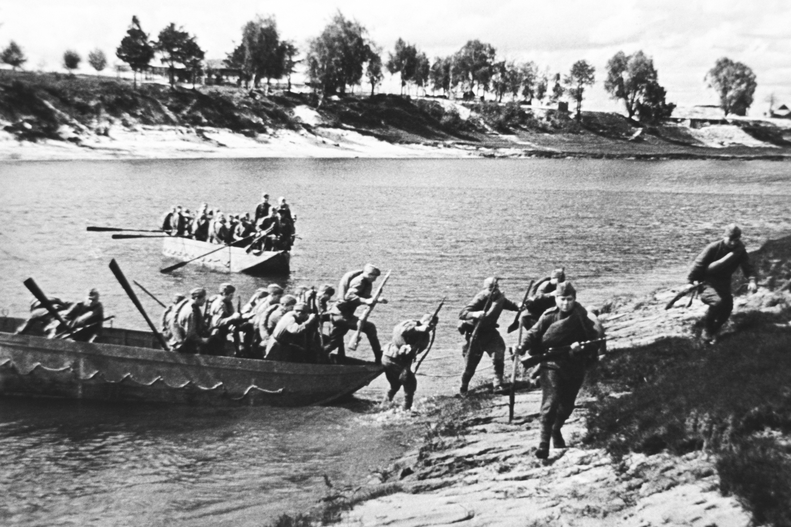
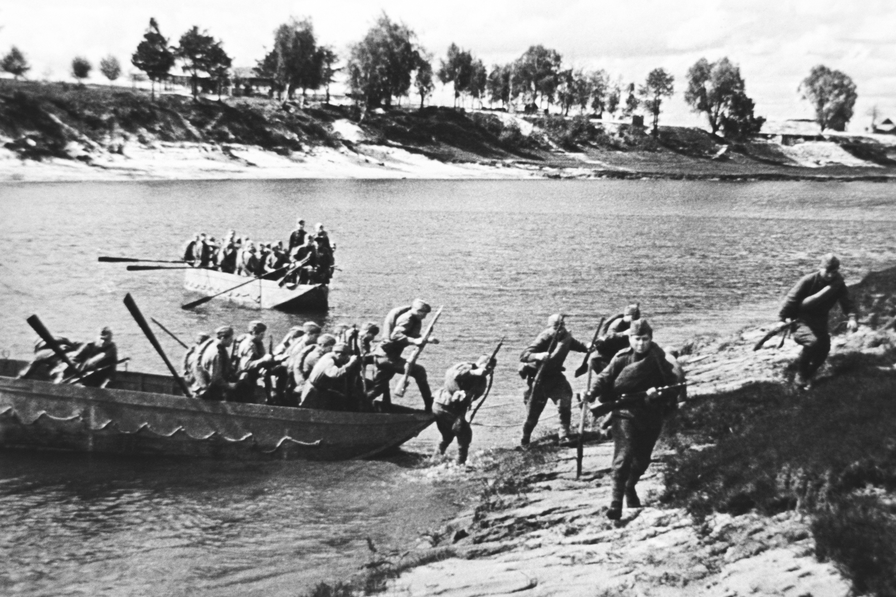

Могилёвская операция
Могилёвская операция — стратегическая наступательная операция войск 2-го Белорусского фронта против немецких сил, проведённая в период с 23 по 28 июня 1944 года на Могилёвско-Минском направлении
В ночь на 23 июня фронтовая авиация, включая бомбардировщики и дальнюю авиацию, нанесла мощные удары по узлам обороны и артиллерийским позициям немецких войск. В 9:00 началась двухчасовая артиллерийская подготовка на участке 49-й советской армии, которая затем в 11:00 перешла в наступление. Во время артподготовки отдельные стрелковые роты уже форсировали реку Проня. В результате 49-я армия прорвала оборону противника на участке Старый Прибуж — Старый Перевоз. К концу дня её части продвинулись на 5–8 километров и вели бой на рубеже Старый Прибуж — восточная окраина Бороденки — Трилесино — лес юго-западнее Новоселки — восточная окраина Мокрядь — Ольховка — северная Сусловка — южная Сусловка — Попова Слобода — Радучи — Бубыл — Радомля — лес южнее Старый Перевоз. Войска 33-й и 50-й советских армий в этот день существенных успехов не достигли. Авиация фронта совершила 627 боевых вылетов, тогда как немецкая авиация осуществила лишь 16 вылетов. В ответ немецкое командование перебросило в район надвигающейся прорыва восточнее Могилёва резерв 4-й армии — пополнявшуюся дивизию, которая была пригодна главным образом для оборонительных действий.
С 7:30 утра активное наступление вели 49-я советская армия и правофланговые части 50-й армии. В результате боевых действий к вечеру советские войска достигли значительных успехов, продвинувшись на фронте на расстояние от 8 до 16 километров и выйдя на рубежи: Черневка — Алюта — роща восточнее Ждановичей — отметка 156,0 — Хоньковичи — Поповка — Староселы — Разинка — Чернавцы — Гировцы — Чижи — Селец. Кроме того, был захвачен плацдарм на западном берегу реки Бася в районе Ханьковичи — Брадзилы. На других участках фронта продвижение советских войск было минимальным или отсутствовало. В ответ на наступление командование немецкой 4-й армии запросило разрешения на отход к так называемой прикрывающей позиции по Днепру. Однако штаб группы армии «Центр» отклонил эту просьбу, категорически указав, что оставшиеся непокрытыми участки ни при каких обстоятельствах не должны добровольно покидаться.
Левофланговые части 33-й и 49-й советских армий, а также правое крыло и центр 50-й армии, продолжали наступательные действия в направлении города Могилёв. В этот день советские войска продвинулись на расстояние от 4 до 15 километров, овладели городом Чаусы и к вечеру вышли на рубежи: Новый Прибуж — Застенки — Белая — Рудицы — Доманы — Яськовичи (иск.) — Зарестье — река Реста — Драчково (иск.) — Мошок — Благовичи — Вилейка — Любавино — Копани — Прудище — Грязивец. В ходе боевых действий немецкое 4-я армия усилила сопротивление и предприняла попытки организовать контратаки для остановки советского наступления. Однако эти контратаки были успешно отражены. Авиация 4-й воздушной армии СССР совершила 850 боевых вылетов, тогда как немецкая авиация осуществила лишь 5 вылетов. Командование немецкой 4-й армии, после назначения на эту должность полковника Теопильскирха вместо ушедшего в отпуск генерал-полковника Хейнрици, в ночь с 25 на 26 июня приняло решение отвести войска к Днепру. Однако это решение было воспринято как запоздавшее и не могло существенно изменить склады боевых действий.
33-я армия продолжала развивать наступательные успехи в направлении города Шклова, к концу дня продвинувшись на 30–35 километров. В результате она вышла на рубежи Сидоровка — Чемоданы и овладела городом Горки. 49-я армия, продолжая наступление, к вечеру вышла на восточный берег реки Днепр на участке от Яново (расположенного примерно в 7 км юго-восточнее Шклова) до Павлово и Хвойна. Левофланговые части, включая 62-й стрелковый корпус, вели бои с арьергардными подразделениями противника на рубеже севернее Шапотицы, Каменки (километрах в 14 восточнее Могилёва), Нового Любужа и Красной Горки. Кроме того, 153-я и 42-я стрелковые дивизии, форсировав Днепр, удерживали плацдарм на западном берегу реки в районе Защиты и западнее Добрейки, перерезав шоссе Шклов — Могилёв. 50-я армия, развивая наступление на запад, к концу дня вышла на рубежи Романовичи — Подбелье (около 15 км юго-восточнее Могилёва), Амховая, Смолка, Кутня, Лисичник и Дворовый. Общая авиационная активность фронта за день составила 1049 боевых вылетов.
 

33-я армия успешно форсировала реку Днепр, овладела населённым пунктом Копысь и городом Шклов. В ходе расширения плацдарма на западном берегу противник оказал сопротивление, и к концу дня части армии вели бой на данном рубеже: Маньково (около 7 км западнее Копыси), Корзуны, Тросенка, Земцы (примерно в 6 км западнее Шклова), Шнаровка и Литовск. За день они продвинулись вперед на 18–26 километров. 49-я армия, используя силы своих дивизий первого эшелона, продолжала форсировать Днепр и преследовать отходящего противника как на правом фланге, так и в центре. К 17:00 она вела бои на рубеже Светлая поляна (примерно в 21 км северо-западнее Могилёва), Закревшина (в 15 км северо-западнее Могилёва), Софиевка, Полыковичи, Краснополье и Сеньково. Также части армии на восточных и северо-восточных подступах к Могилёву, включая подразделения 369-й и 64-й стрелковых дивизий и танковые части, продвинулись за день на 6–11 км. 50-я армия к 17:00 вела бои в центре Могилёва силами 238-й и 139-й стрелковых дивизий, при этом часть сил (два стрелковых полка) форсировала Днепр в районе Буйничи и обходила город с юго-запада. Также одна из стрелковых дивизий вышла к южной окраине Быхова, где начались уличные бои. Другие части завершали очистку восточного берега Днепра, строили переправу и готовились к дальнейшему форсированию реки. Кроме того, 380-я стрелковая дивизия, один из её стрелковых полков, успешно переправилась через Днепр и захватила населённый пункт Стайки. Авиация 2-го Белорусского фронта в этот день произвела 931 вылет для бомбардировочных и штурмовых ударов, уничтожая войска и технику противника и поддерживая наступление советских войск. Противник совершил всего 7 самолёто-пролётов.
К концу дня части 33-й армии успешно отбили все контратаки противника, захватили значительные трофеи и вышли на рубежи Староселье — Вороновка — Шахово — Орловка. 49-я армия продолжала преследование отходящего противника, достигнув главных сил рубежей Головчин — Мостище — Рубцовщина, расположенного примерно в 25 км юго-западнее Могилёва. 50-я армия также продолжала преследовать противника на юго-западе и вышла на рубежи Ташновка — Забродье — Школьный — Городец — Вьюн. Авиация 2-го Белорусского фронта совершила в этот день 581 самолётный вылет для поддержки наземных сил. В то же время противник совершил всего 3 самолёто-пролёта. На итоговом этапе боевых действий войска фронта полностью овладели городами Могилёв, Шклов и Быхов.
В ходе Могилёвской наступательной операции за шесть дней боёв войска 2-го Белорусского фронта прорвали оборону противника по всей оперативной глубине. В результате форсирования рек Проня и Днепр советские войска существенно продвинулись на запад и юго-запад, освободив города Могилёв, Шклов и Быхов, а также значительную часть Могилёвской области Белорусской ССР. Эти успехи привели к созданию серьёзной брешь в обороне южного фланга группы армий «Центр», что стало важной предпосылкой для окружения немецких войск в районе Минска.